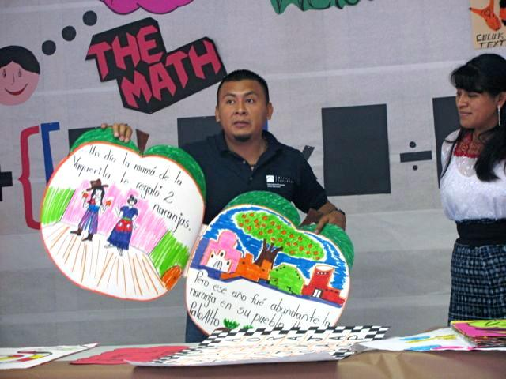

natalie
We're interested in hearing about a project you've created or one you've facilitated for others. What was difficult or challenging? Who or what helped you along the way? What have you learned in the process?


We're interested in hearing about a project you've created or one you've facilitated for others. What was difficult or challenging? Who or what helped you along the way? What have you learned in the process?

Student: "This kind of taught me to never be afraid of stuff you don't know yet..." There is more to this review of the following project. I teach 8th grade science. For the first time, we decided not to have a formal final exam period at the end of the first semester that ended before winter break. My two other colleagues and I decided to use the 2 weeks that would otherwise be used to review for exams and take exams to introduce the students to coding using Scratch. Coincidentally, this occurred at the same time of the Hour of Code initiative so we used that to get started. The students' project was to use Scratch to create an animation illustrating one of the science concepts they learned, or an experiment conducted or a law of nature. The process was one of my most favorite experiences as a teacher that I have ever had. At first many kids were frustrated, mostly because it did not come as easy as they would have liked. This is just to say that they were not used to this type of "work." I would ask them how many times have they tried? or for how long have you been trying to figure this out? Their responses were, once, twice, maybe three times or for about 5 or 10 minutes. I would respond by asking them how long it took them to learn something that they are already really good at. They understood my point. The activity was extremely engaging. It precluded the need for "classroom management." Kids had no problem getting started when they entered the classroom. There was not goofing off. I, as well as a couple of colleagues from the ed tech department at my school, circulated around providing encouragement and responding to questions. How do I...? Mr. Kahn I have a problem...? What if I want to do...? It's not working...etc. One of my newest thoughts about teaching is if the "curriculum" is engaging, there will be less or even no need for classroom management. Discipline issues would disappear. Students diagnosed with ADHD would suddenly not have it anymore, because they are not being asked to sit in a desk and listen. I am trying to get more of my colleagues in other subjects to lessen the width of their content in the classes so that students can explore and create with the concepts they have learned and thus generate more interest. I have gotten a little off topic. The reviews of the students were overwhelmingly positive. They enjoyed it much more than preparing for an exam and taking an exam. Here is a link to several student's evaluations of the project. The most articulate and meaningful description starts around 2 min, 5 seconds in.

Congratulations bkahn...I would have liked to have lessons like that in my childhood education!
When I started to teach architecture for children aged between 4-12 years old I was interested in processes...how children make questions, which type of questions and what answer they are looking for when they make them. I wanted them to analize and to understand their environment without knowing it...and we hardly ever finished doing what we were intended to do because in the way to do it someone made a question that made us change our purpose and as a consequence that question made us finishing doing something completely different. Most of the times they didn't build beautiful things....they were investigating so the result was not a conclusion but the start of new questions or perhaps the point to start doing something new again.
It was interesting but also terrifying to realise that even little kids were able to think that something had to be in a certain way because it had always been like that or that they are also able to say things like I'm not a creative person .
That's the reason I'm interested in creative learning and because of that I reach this plattform...our society need to understand children have to learn playing as well as adults have to be lifelong learners...so adults need also to play!
So what I'm concerned we are no more homo sapiens or homo ludens ...now we are or we need to be homo player

I tried to think of a past project of mine that came with hard obstacles. I don't know if this counts, but the first workshop I tried to host was difficult for me. This was an intro workshop about the MaKey MaKey, conducted for adults. I was very nervous, and through stroke of bad luck I lost all of my presentation materials on the way to the workshop. The participants helped me salvage the workshop.
I had planned a presentation and several projects the participants could choose from. I prepared what I thought was good planning - structure, structure, structure. It turns out the loss of my materials was a blessing in disguise. We improvised by watching a few short videos as a brief introduction, we had a discussion and I answered questions, and then we closed with free play.
First and foremost, I learned to save workshop materials to the cloud from now on  Most importantly, I learned that you cannot plan for other peoples' passions by focusing too much on structure. I'm still learning, but this was a milestone for me in thinking about other peoples' learning experiences.
Most importantly, I learned that you cannot plan for other peoples' passions by focusing too much on structure. I'm still learning, but this was a milestone for me in thinking about other peoples' learning experiences.

I was teaching an MBA course on management and I set up a project with the intended objective that students would practice team-building and develop camaraderie. I divided the class into several small groups - 6 students each. I gave each group a bag of craft supplies (e.g. popsicle sticks, pipe cleaners, glue, etc.). The instruction was: "Working together, design and build a bridge. The finished product must be a minimum of 3 feet long."
Without any hesitation whatsoever one gentleman (I'll call him "Lennie") dumped all the supplies on the table and started building furiously. He was gluing and measuring and twisting pipe cleaners. Meanwhile, his teammates were discussing how they might approach the project; they were planning and organizing their ideas. Suddenly, one student noticed a bridge taking shape from pipe cleaners and popsicle sticks. Lennie's teammates tried to stop him by saying, "Lennie, don't you think we should think about this for a few minutes?" To which he quickly barked, with a deranged look on his face, "WE DON'T HAVE TIME TO THINK!" Of course, at that point everyone, including Lennie, laughed and he finally stopped building and joined the group discussion.
Lessons learned:
The project was fun and the students reported enjoying the process - but I will forever remember Lennie telling his classmates, "WE DON'T HAVE TIME TO THINK!"

I don't like computers very much. I really only learn the bare minimum for me to be relatively proficient for work (enough that my boss thinks I'm good at it). Working on the Scratch was frustrating at the beginning but after I played with it for a little while I got a better handle on it. That was a good experience for me. I tend to get frustrated with computers easily and give up but I really wanted to make a little scratch project. Mine was very basic but I did it and I didn't give up when I got frustrated. Not even when I had to start over once.
I am mostly consultant for most part of my job career which enabled me to be a part of different project teams with different experiences. The projects in general have a concrete deliverable by the end of the duration. Sometimes there are tense and stressful times and some times there are learning things,sometime things are smooth and well planned. Hence the planing is the key to any project with complete focuss. Working in software industry with better process efficiency and executions with guidance from pmo office teams to lead has been proven methodology.
I have always done projects--both personally and professionally. One of the most rewarding collections of projects I did spanned 15 years. In the SEED Program, funded by USAID, teachers from rural areas of  Central America and the Caribbean were selected from 100's in their countries to study for a year in the USA and return as change agents to their own countries and communities. Working with people from different cultures and often limited resources (no paper, electricity, books, potable water, etc., etc.,) heightened my creativity as lead instructor for the program. Our best materials were the often beautiful physical environments of their homeland, natural resources, recycled materials and, of course, the wonderful creative thinking of the teachers themselves. From these, the teachers first created and then taught their students to create homemade books and libraries based on their own histories and cultures, math/science manipulatives, actual products to sell to make money for the schools, water filtration systems, and many, many more things to challenge their students and enhance education as a whole.
I found out that in the process of building my project for this LCL course I first choose the picture for the stages and the look of the sprites, only after this step I started to managing the the "timing" variable..it was a challenge to me and took so much time and so much tests ..maybe it's because I'm not so "expert" using scratch.
Surelly in the next project I'll pay more attention to that in an earlier step.
I perfectly realize the immagine-making process by doing in a playfull way something that talks about me .
I use this strategy whenever I can with the childern in my classroom..and even with my colleagues!!

What about this project was different from times when you did give up? Can that difference be captured and applied to other situations?